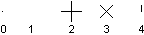
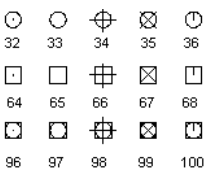

Создание точечных объектов
Точечные объекты могут быть полезны, например, при использовании в качестве опорных точек, к которым можно привязываться при построении иной геометрии. Вы можете задать стиль точки и ее размер в % относительно рабочей области экрана или в абсолютных единицах. Свойства Pdmode и Pdsize объекта Database управляют внешним видом точечных объектов. Значения 0, 2, 3 и 4 для Pdmode задают фигуру (условный знак), которая будет отображаться на месте точки. Значение 1 означает, что точка не будет иметь отображения.

Добавление 32, 64 или 96 к значениям (0..4) с картинки выше приводит к отрисовке определенной фигуры поверх базового обозначения (0..4).

Параметр Pdsize управляет размером точечной фигуры, за исключением случаев, когда Pdmode равен 0 и 1. Значение 0 определяет размер точки, составляющий 5 процентов от высоты текущей графической области. Положительное значение Pdsize задает абсолютный размер точечной фигуры. Отрицательное значение интерпретируется как процент от размера области экрана. После изменения значений Pdmode и Pdsize внешний вид существующих точек изменится при следующем обновлении чертежа (при вызове команд РЕГЕН\ВСЕРЕГЕН)
Создание точки и смена её визуального стиля
Код ниже создает точечный объект в пространстве Модели в координатах (5, 5, 0). Редактируются отображения точки Pdmode и Pdsize.
using Autodesk.AutoCAD.Runtime;
using Autodesk.AutoCAD.ApplicationServices;
using Autodesk.AutoCAD.DatabaseServices;
using Autodesk.AutoCAD.Geometry;
[CommandMethod("AddPointAndSetPointStyle")]
public static void AddPointAndSetPointStyle()
{
// Get the current document and database
Document acDoc = Application.DocumentManager.MdiActiveDocument;
Database acCurDb = acDoc.Database;
// Start a transaction
using (Transaction acTrans = acCurDb.TransactionManager.StartTransaction())
{
// Open the Block table for read
BlockTable acBlkTbl;
acBlkTbl = acTrans.GetObject(acCurDb.BlockTableId,
OpenMode.ForRead) as BlockTable;
// Open the Block table record Model space for write
BlockTableRecord acBlkTblRec;
acBlkTblRec = acTrans.GetObject(acBlkTbl[BlockTableRecord.ModelSpace],
OpenMode.ForWrite) as BlockTableRecord;
// Create a point at (4, 3, 0) in Model space
using (DBPoint acPoint = new DBPoint(new Point3d(4, 3, 0)))
{
// Add the new object to the block table record and the transaction
acBlkTblRec.AppendEntity(acPoint);
acTrans.AddNewlyCreatedDBObject(acPoint, true);
}
// Set the style for all point objects in the drawing
acCurDb.Pdmode = 34;
acCurDb.Pdsize = 1;
// Save the new object to the database
acTrans.Commit();
}
}